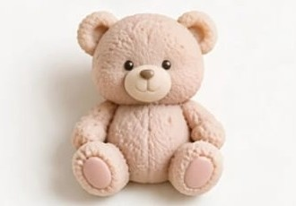
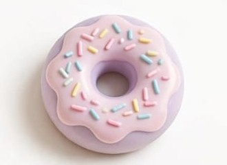
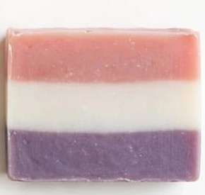

ITZGA no nació en una fábrica. Nació en una cocina, con una olla, unos moldes y la idea de hacer las cosas bien, sin prisa.
Queríamos algo bonito que oliera rico, pero sobre todo, algo honesto. Velas que no llenen tu casa de humo negro. Jabones que no resequen tu piel. Productos que puedas regalar sin pena, porque sabes qué tienen dentro.
Así empezamos a probar. Velas que se derretían chuecas, jabones que parecían gelatina, aromas que no quedaban. Y entre error y error, encontramos lo que buscábamos: el gusto por hacerlo a mano.
En ITZGA todo se hace en lotes pequeños, aquí en CDMX. Usamos solo cera de soya, glicerina vegetal, manteca de karité, avena, arcillas y aceites esenciales. Ingredientes que tu piel reconoce. Nada más.
Cada osito, cada dona, cada barra tricolor y cada vela de vainilla es desmoldada y cortada a mano, una por una. Por eso ninguna pieza es idéntica a otra. Por eso huele y se siente diferente.
No somos una marca masiva. Somos un taller pequeño que cree que lo artesanal no es una tendencia, es volver a lo esencial. Es encender una vela y sentir que llegaste a casa.
Gracias por hacer parte de tu hogar un pedacito del nuestro.




Hecho a mano, con amor.
ITZGA
Taller artesanal · Ciudad de México